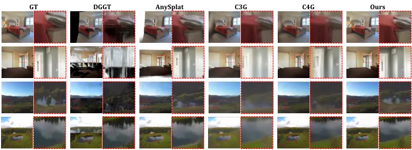
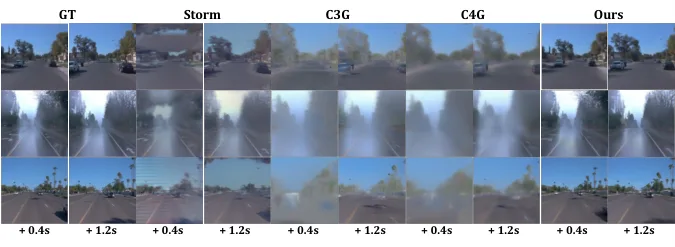
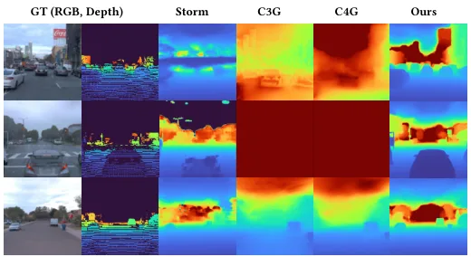

HiQGS：面向前馈高斯重建的层级时空查询
HiQGS: Hierarchical Spatiotemporal Querying for Feed-Forward Gaussian Reconstruction
一句话：把“时间戳”变成查询维度。编码器保留几何与外观两路多尺度 token 并加上时空-投影位置编码（TP-RoPE），解码器用目标时间查询，一次前向渲染任意目标时刻。Waymo 全图 PSNR 27.69（StreetForward 27.01）、深度 AME 7.12（DGGT 7.53）；RE10K 插值 28.31（TokenGS 27.33，同为 66K 高斯）。训练成本是 8×H800 约 30 小时。
Waymo full-image PSNR
depth AME
RE10K interpolation
Gaussians / timestamp
作者、单位与技术谱系 · Research context
作者与单位
研究脉络
- VGGT-Ω（Wang et al., 2026）方法基座关系：几何编码器直接从 VGGT-Ω 初始化，多级结构特征来自它；HiQGS 的推进是加时间与位姿条件并改解码方式。[论文 §4.1 与 Table 4]
- TokenGS（2026）对照前作关系：同为“紧凑 query → 高斯”的前馈路线，HiQGS 的差别是 query 带目标时间条件、表示按观测条件分层。[论文 Table 3]
- StreetForward / DGGT（2026）问题前作关系：街景前馈重建的同期工作，HiQGS 在 Waymo 上以它们为主对照，差别在时空证据的组织方式。[论文 Table 1/2]
合作网络
- 浙江大学 ↔ 蔚来 ↔ 上海科技大学 ↔ 哈工大Zhejiang University → NIO关系：共同署名[arXiv TeX e-print 作者块]
- HiQGS → VGGT-ΩHiQGS → VGGT-Ω关系：技术依赖（几何编码器初始化）[论文 §4.1 与 Table 4]
- HiQGS → gsplatHiQGS → gsplat 光栅化器关系：技术依赖（渲染后端）[论文 §4.1 实现细节]
作者与单位来自 arXiv TeX 作者块（HTML 丢失了单位信息）；机构 3（University of Cambridge）列在作者块中但没有作者署该编号，这一点按原文保留、不做推测。技术依赖来自实验设置段落。
方法本质拆解 · What actually changed
是不是微调？
是从预训练 VGGT-Ω 初始化几何编码器、再整体训练：外观分支与解码器都是新加的，150K 步、8×H800 约 30 小时，权重确实改过。监督只有多目标时刻的渲染损失与投影正则，不依赖光流或场景流标注。
加了什么先验与约束？
核心约束是 TP-RoPE：把图像位置、观测时间与相机位姿编码进 token，使不同尺度/视角/时刻的证据处在同一个投影参考下。另一个是投影正则：对落在所有目标视锥外的高斯按最小穿透量惩罚，避免稀疏视角下的游离基元。
推理时到底做了什么？
给定 context 帧与目标时间戳，只做一次前向：HSE 编一次（多目标时刻共享），TAD 对每个目标时刻解码一组高斯，然后直接光栅化。没有逐场景优化、没有全局对齐、也没有跨时刻的 primitive 匹配，这一点与“先重建再跟踪”的管线很不一样。
方法本质是什么？
本质是把“何时观测”变成检索条件：同一组 Gaussian query 在不同时间条件下解码出不同场景状态，时间一致性由共享 query 与条件编码隐式承担。它没有显式运动场，因此换来前馈效率，但把动态建模的责任交给了数据与容量。
输入稀疏带位姿单目帧，把位置/时间/位姿编码进层级 token 并以目标时间查询解码高斯，一次前向得到任意时刻场景，直接效果是动态区与深度精度的同步提升。

结论与问题Conclusion & Motivation
核心结论
HiQGS 的赌注是“时间要进编码，而不是靠运动场补”：它把多分辨率几何-外观 token 按图像位置、观测时间与相机位姿编码（TP-RoPE），再用目标时间戳作为 query 从层级表示里检索证据，一次前向就给出该时刻的 Gaussian 场景。Waymo 全图 PSNR 27.69 对 StreetForward 27.01、动态区 24.41 对 24.30，LiDAR 深度 AME 7.12 对 DGGT 7.53；RE10K 插值 28.31 对 TokenGS 27.33（同为 66K 高斯）——但在全图 SSIM 上 DGGT 的 0.846 仍高于它的 0.840。
动机与问题
作者指出的错配是“证据的组织方式”问题：一类方法把高斯分配绑在单帧特征上，换视角或换时刻就得重新分配；另一类用紧凑 latent query 聚合多帧，但 query 不知道目标时刻，跨尺度、跨视角、跨时间的证据难以对齐。他们的观察是：每个观测同时携带外观、几何、时间戳与相机位姿，相机运动又把视角变化与场景变化耦合在一起，所以需要一个显式按“何时、从何处观测”组织的层级表示，而不是把所有帧压成一组无序 token。
方法Method
方法总览
两段式。HSE（层级时空编码器）分两路：几何分支用预训练 VGGT-Ω 抽多级结构特征，外观分支用轻量 ViT 抽更细的外观 token；两路都按图像位置、观测时间与相机位姿加上 TP-RoPE，形成层级表示。TAD（时间自适应解码器）持有一组可学习的 Gaussian query，以目标时间戳为条件做交叉注意力检索 HSE 证据，输出该时刻的高斯状态；监督是多目标时刻的渲染损失（RGB + SSIM）加一个投影正则，约束那些落在所有目标视锥外的高斯。
关键技术细节
关键数字：1024 个可学习、角色无关的 Gaussian token，每个解码成 64 个高斯，共 65,536 个/目标时刻；几何编码器 patch 16、外观编码器 patch 8，输入 256×256。损失是 L_rgb + 0.2·L_ssim + 1.0·L_proj，有 LiDAR 时再加 0.2 的掩码深度项；AdamW、学习率 4e-5、one-cycle、150K 步约 300 epoch、8×H800 约 30 小时。方法明确声称不需要光流、场景流、轨迹监督、静态/动态高斯预划分，也不需要跨时刻的 primitive 对应——时间一致性完全靠“同一组 query 在不同时间条件下解码”来承担。

实验Experiments
实验设置
动态街景用 Waymo Open Dataset 前视相机：每段 20 帧，索引 0/5/10/15 为 context，其余 16 帧按记录的时间戳与位姿渲染，既有插值也有短时外推；官方划分 798 训练场景 / 202 验证场景。静态重建用 RE10K 的插值与外推协议（2 context、4 target）。指标是 PSNR/SSIM/LPIPS，外加把稀疏 LiDAR 投影到前视图像后算的 AME 与 MSE。对照覆盖 feed-forward 高斯与街景专用方法：PVG、AnySplat、DA3+GS head、STORM、DGGT、C3G/C4G、StreetForward、MVSplat、DepthSplat、GS-LRM、TokenGS。
实验数字与比较
Waymo：全图 PSNR 27.69/SSIM 0.840 对 StreetForward 27.01/0.818、DGGT 27.41/0.846；动态区 PSNR 24.41/SSIM 0.833 对 StreetForward 24.30/0.827、STORM 22.10/0.624、DGGT 20.99/0.821。深度：AME 7.12 对 DGGT 7.53、AnySplat 7.96、STORM 8.97；MSE 8.10 对 11.12/10.25/12.44（C3G/C4G 的 52.34/55.15 说明作者自实现失败，不宜当基线）。RE10K：插值 28.31/0.911/0.102 对 TokenGS 27.33/0.882/0.173（同为 66K）、GS-LRM 28.10（131K）；外推 23.21/0.840 对 TokenGS 22.60/0.831。
消融/失败边界
Table 4 四个变体都很清楚：去掉 TP-RoPE 退化最大，PSNR 27.69→25.87（−1.82）、SSIM 0.840→0.776；去掉目标时间嵌入 27.69→26.12（−1.57、SSIM −0.037）；去掉几何编码器 26.92（−0.77、SSIM −0.019）；去掉外观编码器 27.24（−0.45、SSIM −0.023）。失败边界有三处：全图 SSIM 仍输给 DGGT（0.840 对 0.846）；C3G/C4G 的深度 AME 高达 52–55，说明跨方法数字的可比性依赖作者自己的重实现；外推只做到 +1.2 s 且只有定性图，长期外推是否稳定没有证据。
局限与迁移Limitations & Transfer
局限与待核验
论文 HTML 正文没有独立的 limitation 段落，作者只在结论里泛泛写“future work”，这本身是一个信息缺口。我们待核验：256×256 输入下的分辨率瓶颈（对小目标与远距离结构）；固定 65,536 高斯的容量上限；30 小时 8 卡训练的成本是否值得；以及最关键的一点——没有任何推理时延/显存数字，无法判断它能否进实时管线。
与你研究路线的关系
TP-RoPE 这个思路可以直接迁移到我们的多相机/多时段建图：把“哪个相机、什么时刻、什么位姿”编进 token，而不是让网络自己从数据里猜。“目标时间查询”也对应我们按查询时刻取地图的需求（例如回放、标定核验）。下一步实验：在固定 rig 的多时段数据上对比两种 token 组织——统一 latent query（不带时间/位姿条件）vs TP-RoPE 层级查询——只测同一视角的重建一致性；并先量推理时延，若单帧超过我们前端预算，就只借用它的编码方式而不是整模型。



